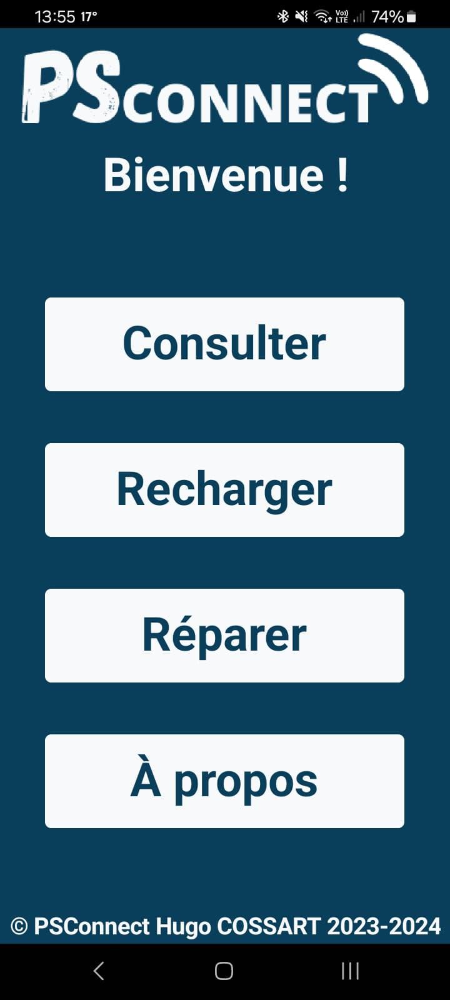
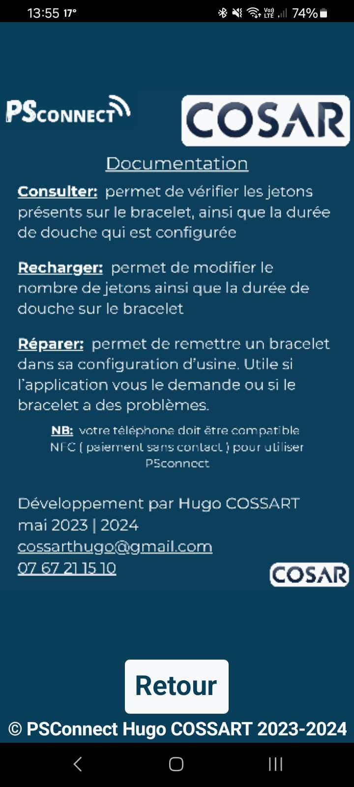
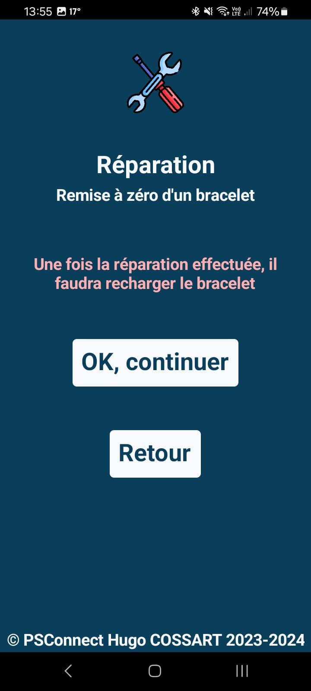
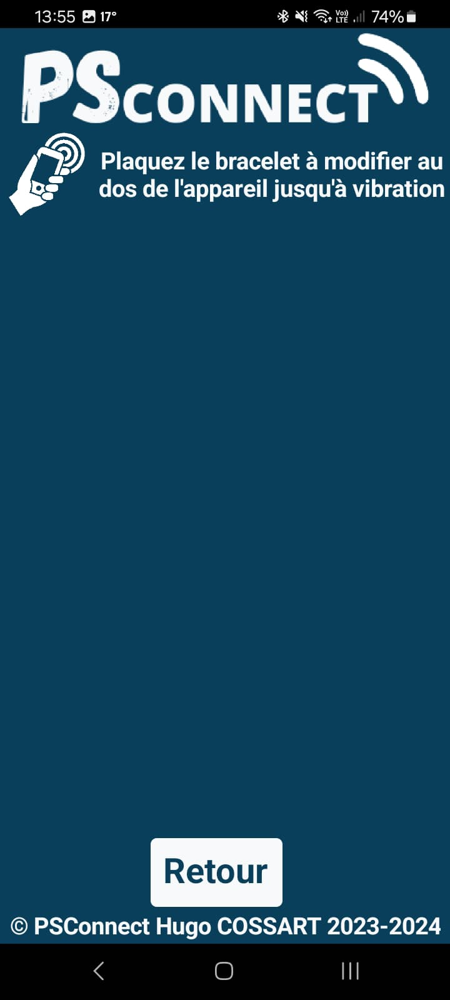

Description :
PSconnect est une application mobile NFC développée pour un camping, permettant de lire et d’interagir avec les badges RFID des campeurs. Après une phase de reverse engineering des bracelets RFID, l’application peut afficher les informations du badge, gérer les jetons de douche, et ajouter des crédits de manière sécurisée, offrant ainsi une solution pratique au personnel du camping.
Fournir une application mobile efficace pour le personnel de camping afin de faciliter la gestion des douches via les bracelets RFID. PSconnect évite l’utilisation de terminaux propriétaires coûteux et propose une alternative open-source, rapide et pratique.



